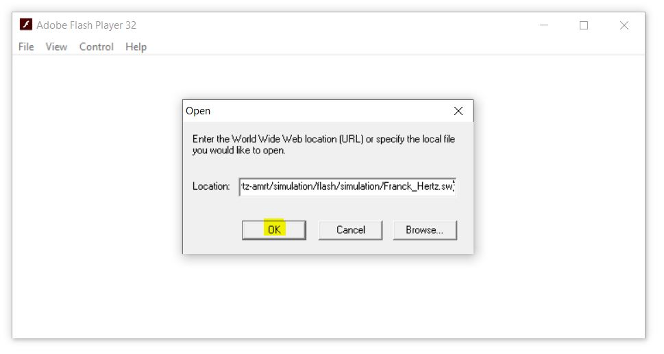
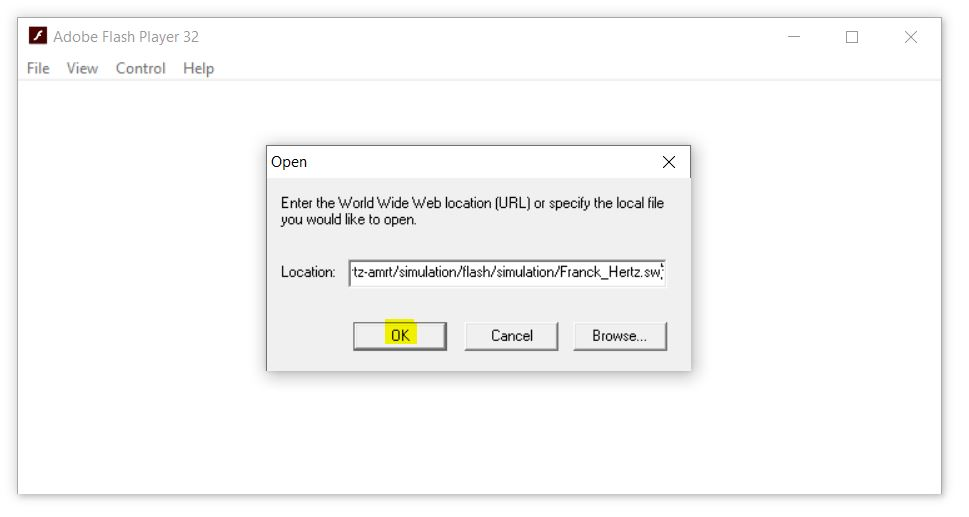

▶ Windows system
Step 1: Open Flash Player

Step 2: Copy the Flash content link by clicking the 📋 icon provided above.
Step 3: Click File → Open from the Flash Player menu.
Step 4: Paste the Flash content link in the Open window of the Flash Player and click the OK button.


▶ Linux system
Step 1: Install
Wine on your Linux system.For Ubuntu
sudo apt updatesudo apt install wineFor Fedora
sudo dnf install wineStep 2: Open terminal and navigate to the folder where the Flash Player is downloaded.
Step 3: Open the Flash Player using
wine flashplayer.exe.Step 4: Copy the Flash content link by clicking the 📋 icon provided above.
Step 5: Click File → Open from the Flash Player menu.
Step 6: Paste the Flash content link in the Open window of the Flash Player and click OK.